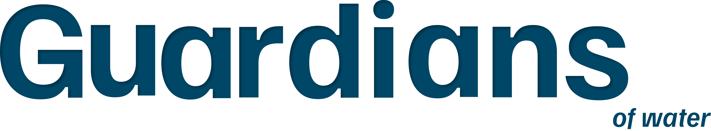
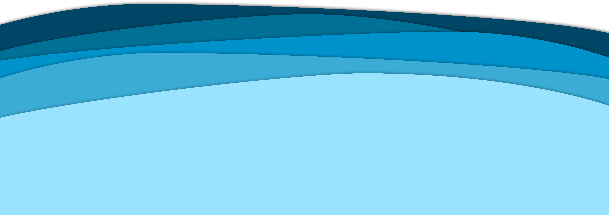
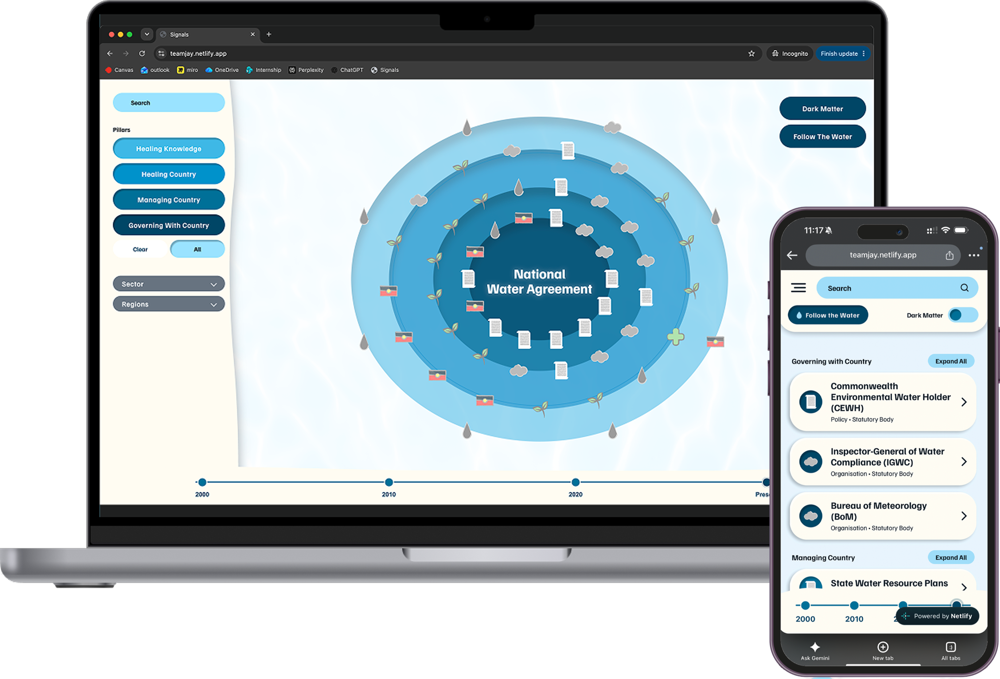
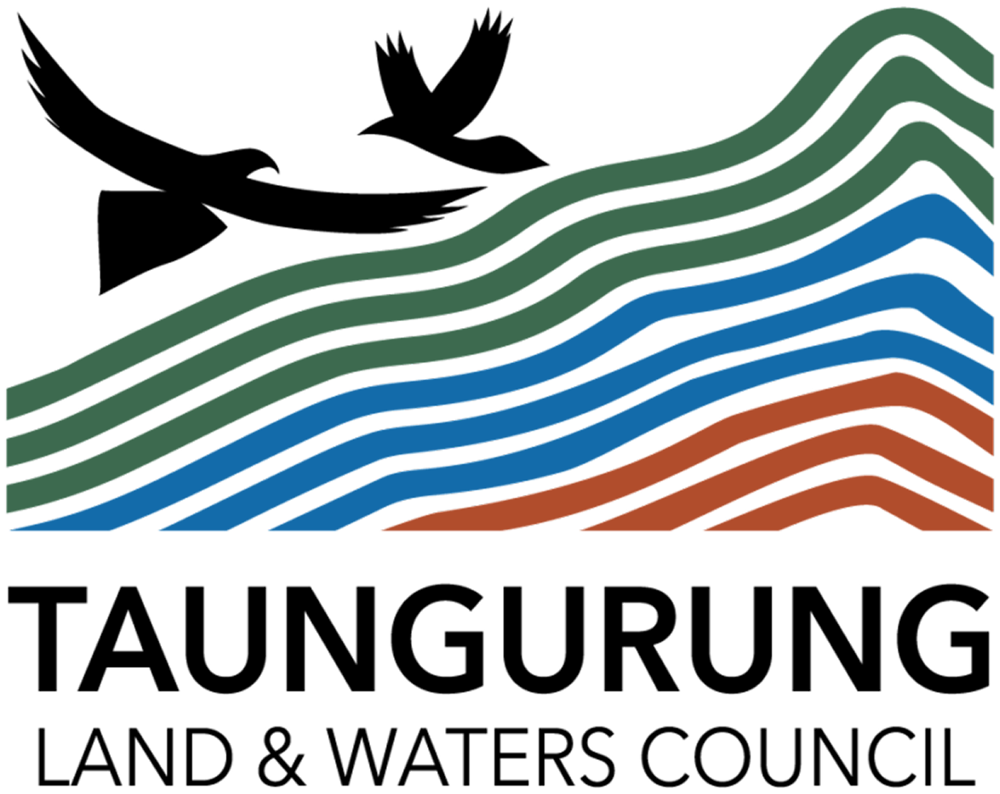
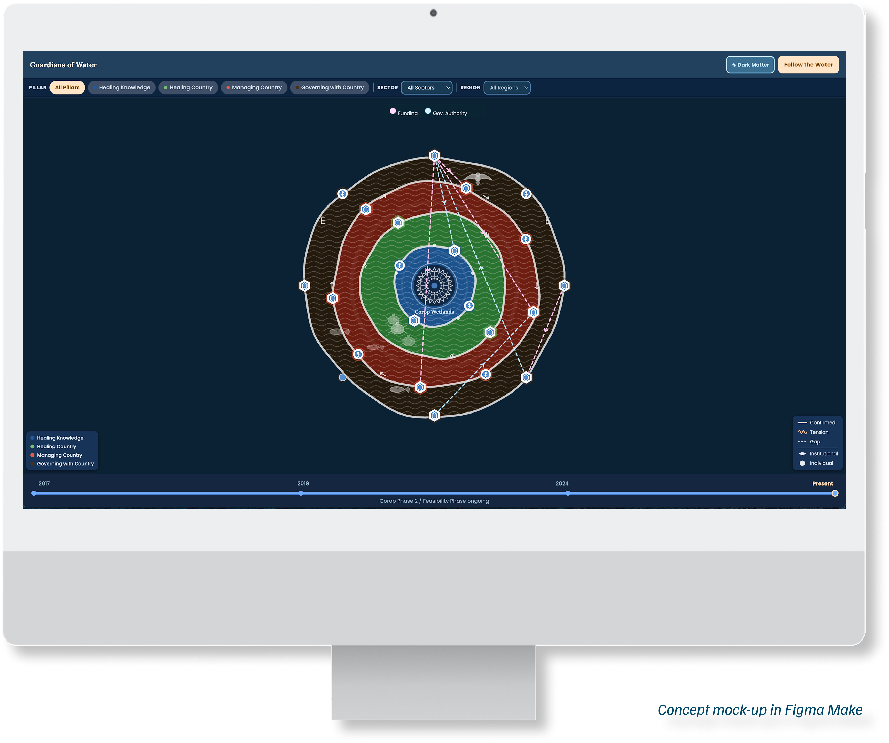
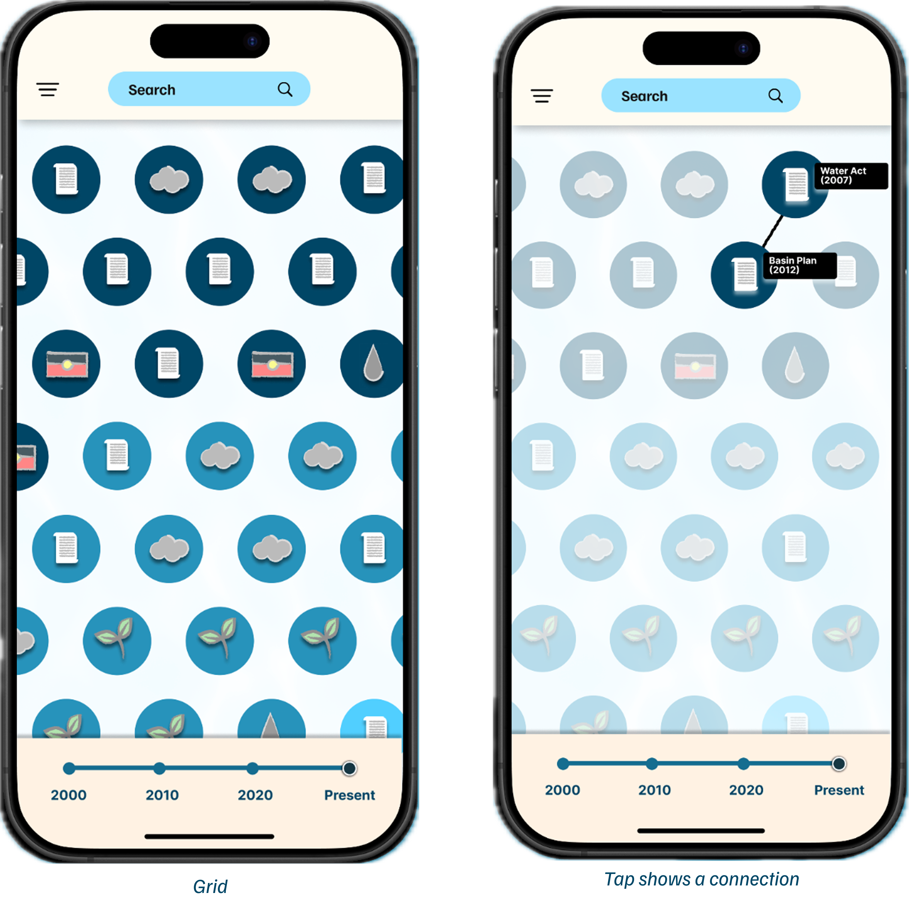

“I can see the connections clearly!”
Testing confirmed that our mapping system worked as intended, providing a clear and accessible way to visualise the connections between water policies and organisations.


In partnership with the Taungurung Land and Waters Council’s Corop
Cultural Waterscape
Jannalyn Tan · Jiwon Yang · Amber Klepacovski · Alicia Chow

Explore Australia’s water policy landscape through an interactive map of the National Water Agreement. Discover how policies, organisations and people connect, and uncover who is involved, how funding flows and where authority lies.
We acknowledge the Taungurung People, Traditional Owners of the lands and waters at the heart of this project, and thank the Taungurung Land and Waters Council for sharing their framework and the work of Boon Ganalina, the Guardians of Water. We also acknowledge the Woi wurrung and Boon wurrung peoples of the eastern Kulin Nation, on whose unceded lands RMIT stands and where this project was made. We pay our respects to Elders past and present, and recognise that sovereignty was never ceded.
The connections behind policy are hard to see.
Policy is shaped by relationships between organisations: who funds, who decides and who is responsible. But these connections are scattered across legislation, reports and departmental publications. That makes it hard to see who influences decisions, spot gaps in accountability, or understand how a policy area fits together as a whole.
We chose water policy as the case to test the idea, starting with the Taungurung Land and Waters Council’s Corop Cultural Waterscape program. Our research then showed that water policy is connected at a national level, so we widened the focus to the National Water Agreement and the organisations and policies tied to it.

Australia’s water governance involves governments, agencies, industry, researchers, Traditional Owner groups and community organisations. Funding, authority and responsibility are shared across all of them, but no single place shows how.
Community Engagement Officer
“I don’t need to become a policy expert. I just need to know who to call.”
Understand who’s responsible for what, so she can direct community questions to the right organisation.
Jargon-free explanations and no login wall, so she can build confidence before committing to anything.
Checks tools like this occasionally, often during or just after community meetings.
Current websites are often too complex to understand, making it difficult for her to see how different policies connect and influence one another.
Initial Concept
We began with a single case study: the Corop Cultural Waterscape, a program led by the Taungurung Land and Waters Council. The concept centred on the Corop Wetlands, with the organisations around it linked by solid lines for confirmed partnerships. A hidden Dark Matter layer revealed the funding and decision-making behind those connections. Send a Ripple let users message an organisation directly when they spotted a gap.



After diving deeper into our research and identifying over 45 data points, we realised that Australia’s water policies ultimately lead back to the National Water Agreement (NWA). This discovery led us to shift our focus from Corop to the NWA, allowing us to explore the broader connections between water policies and organisations.
Testing confirmed that our mapping system worked as intended, providing a clear and accessible way to visualise the connections between water policies and organisations.
Testing confirmed that our waterway-inspired styling reinforced the theme while keeping policy connections clear and easy to explore.
Testing showed that our filtering system made it easier to navigate the dataset, helping users quickly find relevant policies and organisations while keeping the website clear and accessible.
We tested several mobile layouts, including zoom controls, filter sheets and an Apple Watch-style icon grid. However, the small touchscreen made the colour-only circles difficult to identify without tapping, so we switched to a list grouped by the four pillars for clearer navigation.



One map, from overview to detail
Guardians of Water is a responsive website mapping Australia’s water policy landscape around the National Water Agreement. It organises policies, organisations and Traditional Owner groups into four rings based on Taungurung Land and Waters Council’s pillars, allowing anyone to explore water governance at their own pace, without a login or prior policy knowledge.
entities researched and checked against primary sources
Pillars from the Taungurung Land and Waters Council’s own framework to use.
Unique features making our website accessible and easy to use.
Light Matter shows who is involved in water policy. Dark Matter reveals who funds and decides.
The National Water Agreement sits at the centre, with policies and organisations arranged on four rings based on the pillars. Icons make each type of entity easy to recognise at a glance.

A layer that reveals the funding and decision-making relationships behind the visible connections. It keeps the main view simple while giving deeper insight on request.

Narrow the map by pillar, sector or region so you see only what’s relevant. Filters can be cleared at any time to return to the full picture.
Select any icon to see who or what it is, what it does and how it links to other entities. Connections appear only for the selected item, so the map never becomes a tangled web.

Spotted a gap or want to get in touch? Send a ripple to an organisation straight from its profile, turning exploration into action.
Pick a starting and ending policy and trace how they connect, step by step. It’s a guided way to understand relationships without needing a policy background.
font-family: "Familjen Grotesk", sans-serif;
Introduces the project without repeatedly interrupting returning users.
Keeps browsing open while requiring myGov sign-in to send a Ripple, reducing spam and unnecessary friction.
Combines visuals and text to improve recognition, accessibility and understanding.
Filters by pillars, sector, region and year help users navigate complex information with less effort.
Consistent colours, shadows and timeline highlights make active and inactive states easy to recognise.


 Loading Page
Loading Page
 List Map
List Map
 Information Page
Information Page